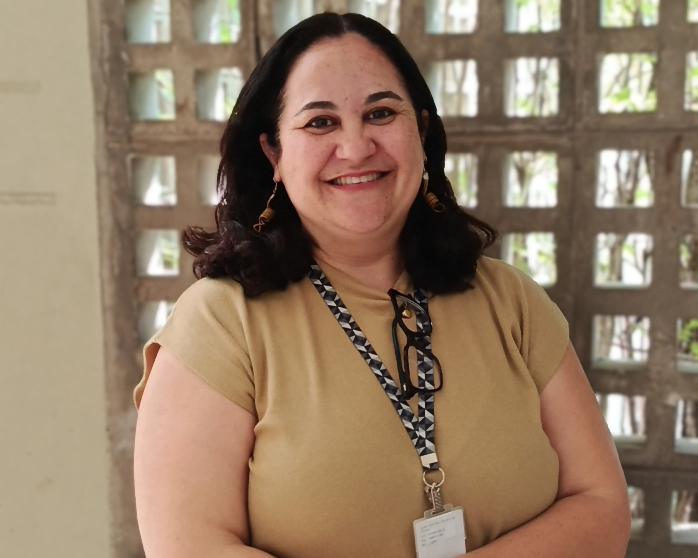

Geografia & Transformação
Da Metrópole à Sala de Aula: A Trajetória da Professora Edna
Vinda de Osasco, Edna passou pelo Direito e pelo setor bancário antes de realizar o antigo sonho de lecionar. Hoje, ensina Geografia semeando conhecimento e empatia: "Fiquem bem, se cuidem e até a próxima".
Ler História Completa →